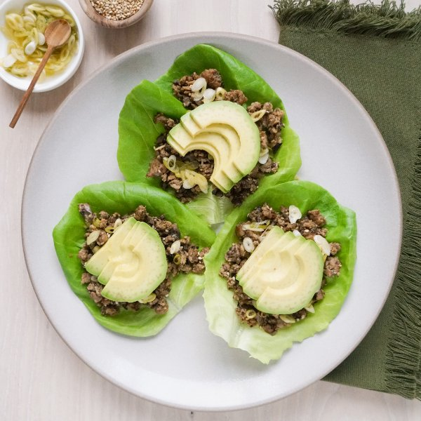

Ginger Pork, Mushroom & Avocado Lettuce Wraps with Pickled Green Onion

Nutrition (per serving)
666.6 kcalCalories
38.4 gProtein
21.9 gCarbs
49.9 gFat
Full nutrition table
| Calories | 666.6 kcal |
| Total fat | 49.9 g |
| Saturated fat | 11.7 g |
| Trans fat | 0.2 g |
| Cholesterol | 115.7 mg |
| Sodium | 141.4 mg |
| Carbohydrates | 21.9 g |
| Fiber | 9.4 g |
| Sugars | 5.5 g |
| Protein | 38.4 g |
| Potassium | 1683.2 mg |
| Calcium | 103.8 mg |
| Iron | 3.9 mg |
| Vitamin A | 400.5 IU |
| Vitamin C | 17.2 mg |
| Vitamin D | 32.3 IU |
Cookware
Ingredients
- 2avocados
- 1 headbutter (Boston) lettuce
- 1 lbcremini mushrooms
- 2 clovesgarlic
- 3 (1 inch) piecesginger root
- 1 small bunchgreen onions (scallions)
- 1 ½ lblean ground pork
- brown sugar
- rice vinegar
- salt
- sesame seeds
- soy sauce
- toasted sesame oil
Steps
- Wash and dry the fresh produce.1 small bunch green onions (scallions)
1 lb cremini mushrooms
3 (1 inch) pieces ginger root
2 avocados
1 head butter (Boston) lettuce - Place vinegar, sugar, and salt in a small bowl; stir to combine the pickling liquid.⅓ cup rice vinegar
1 ½ tsp brown sugar
1 tsp salt - Trim and cut green onions crosswise into thin pieces. Add to the bowl with the pickling liquid, stir to combine, and set aside.
- Roughly chop mushrooms. Place in a medium bowl and set aside.
- Preheat a large skillet over medium-high heat.
- Once the skillet is hot, add oil and swirl to coat the bottom. Add pork and salt; cook, breaking the meat apart with a spoon, until browned and crumbly, 5-7 minutes.4 tsp toasted sesame oil
1 ½ lb lean ground pork
⅛ tsp salt - Meanwhile, peel and mince ginger and garlic. Place both in another small bowl along with sesame seeds, soy sauce, and additional vinegar. Stir to combine the sauce.2 cloves garlic
2 tbsp sesame seeds
2 tbsp soy sauce
2 tsp rice vinegar - When the pork is done, add the mushrooms to the skillet. Continue to cook, stirring occasionally, until mushrooms start to brown, 4-5 minutes.
- Meanwhile, halve and pit avocados; using a spoon, scoop out the flesh and slice crosswise into thin half-moons.
- When the mushrooms are done, add sauce to the skillet and stir to combine. Continue to cook until heated through, about 30 seconds. Remove from heat.
- Separate the lettuce into leaves. Pile leaves, in stacks of two per wrap, onto plates. Fill each wrap with the pork mixture, then top with pickled green onions and avocado. Enjoy!